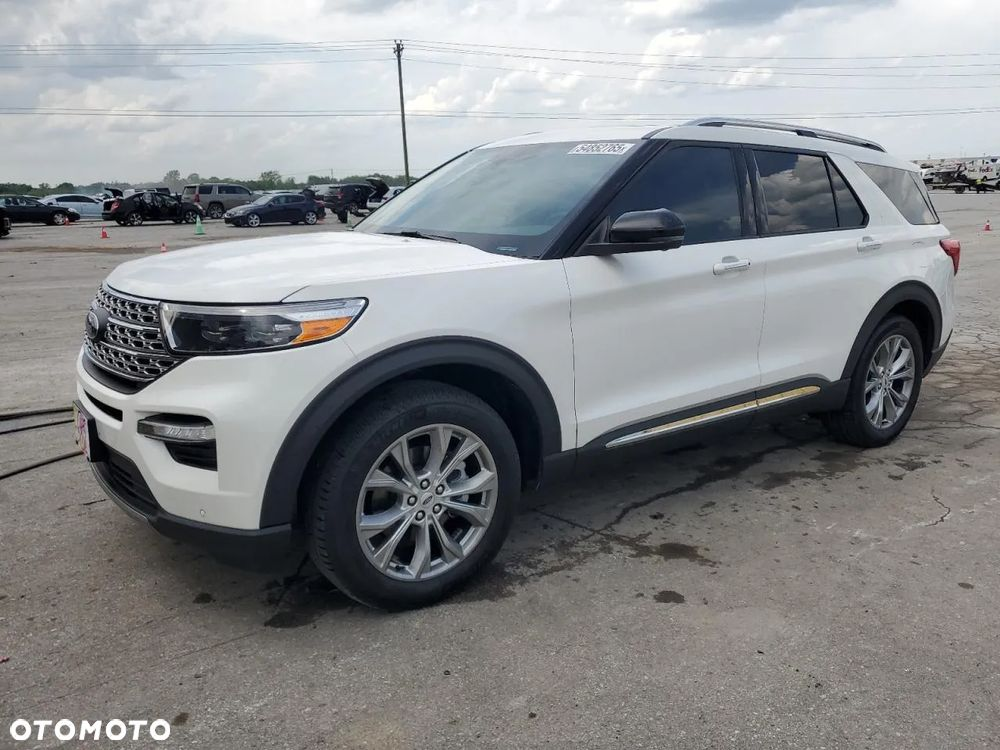
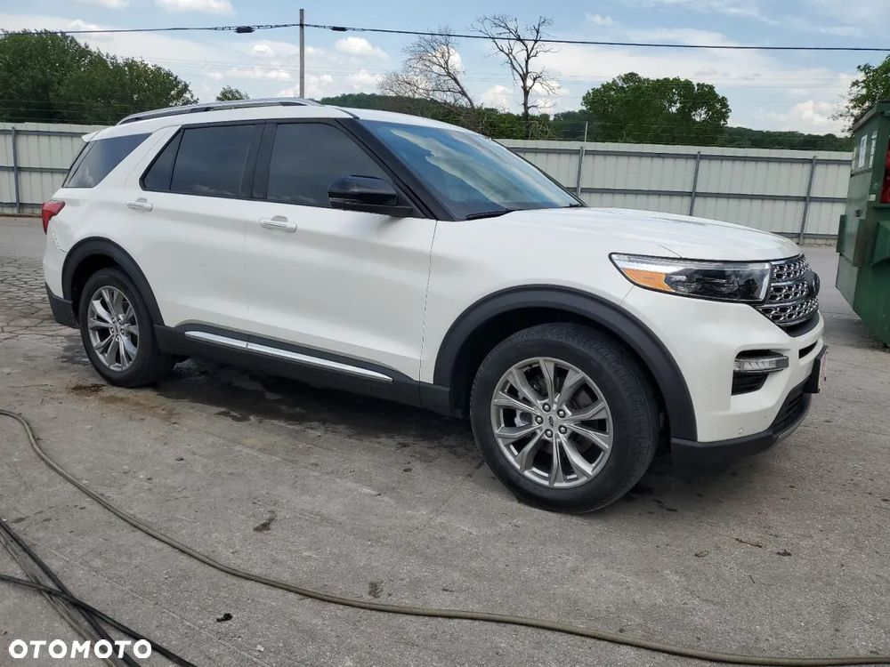

Ford Explorer 2.3L EcoBoost 2022 odpala i jeździ. Uszkodzony z tyłu, co widać na załączonych zdjęciach. Bogata wersja wyposażenia Limited obejmuje napęd na cztery koła, reflektory LED, system multimedialny SYNC 3 z dużym ekranem dotykowym, kamerę cofania, skórzaną tapicerkę, podgrzewane, adaptacyjny tempomat, system utrzymania pasa ruchu, czujniki parkowania oraz wiele innych udogodnień. Przed uszkodzeniem bezwypadkowy i regularnie serwisowany w ASO. Posiadamy w ofercie więcej innych egzemplarzy!
Zaoszczędź do 40 % na zakupie samochodu, sprowadzając go z nami z USA lub Kanady!
Z powodzeniem działamy na rynku od 2016 roku, co potwierdzają pozytywne opinie naszych klientów!
Sprowadzamy auta z USA i Kanady pod zamówienie! Załatwiamy wszystkie formalności związane z zakupem, transportem oraz opłatami zarówno w Holandii/Niemczech jak i Polsce!
Zajmujemy się również naprawami, dostosowaniem auta do warunków europejskich.
Możesz od nas odebrać, gotowe naprawione, posprzątane auto!
Kompleksowa obsługa od A do Z!
Oferowane przez nas samochody pochodzą tylko i wyłącznie od największych amerykańskich firm ubezpieczeniowych lub poleasingowych.
Dodatkowo każde auto przed licytacja jest gruntownie sprawdzane pod względem jego historii, stanu prawnego, wcześniejszej wypadkowości oraz wielu innych aspektów aby zapewnić klientowi 100% bezpieczeństwa!
Cena podana w ogłoszeniu zawiera wszystkie opłaty importowe z transportem pod wskazany adres, pozostają koszty związane z akcyzą, rejestracja pojazdu w Polsce oraz ewentualna naprawa auta.
Jeżeli nie podoba Ci się konkretny egzemplarz prezentowany w ogłoszeniu, podaj nam swoje wytyczne; kolor, silnik, przebieg, rocznik, a my znajdziemy odpowiednią sztukę!
Zapraszamy serdecznie do naszego biura, które mieści się pod Warszawą:
05-230 Kobyłka
Nadarzyńska 83
Zapraszamy w godzinach:
Pn-Pt 09:00 - 17:00 lub w innych godzinach po wcześniejszym umówieniu się.
Lub do całodobowego kontaktu telefonicznego:
Nasze realizacje znajdziesz na Facebooku:
U.S Automotive - kompleksowy import aut z USA i Kandy
lub
www.usautomotive.pl
Powyższa oferta ma charakter informacyjny i nie stanowi oferty handlowej w rozumieniu art. 66 §1 Kodeksu Cywilnego
